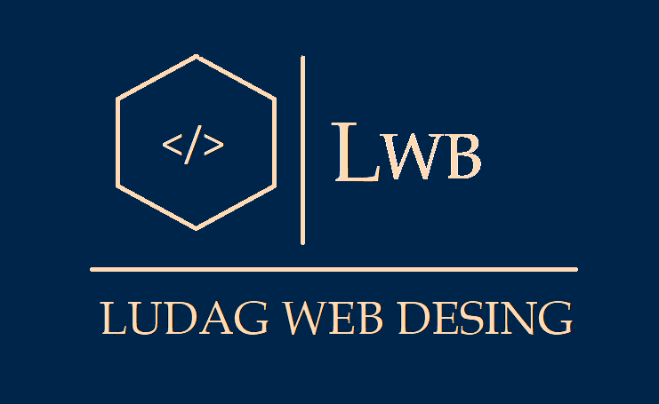

Luis Daniel García Nuñez
Más sobre mí
Lee sobre las cosas que me apasionan, las
experiencias que me han forjado y las desiciones
que me han guiado al lugar en que me encuentro

experiencias que me han forjado y las desiciones
que me han guiado al lugar en que me encuentro